Mid Term Report
Data Science – AI (Artifical Intelgence)
- Course Level:BS Software Engineering
- Report Duration:1-8 Weeks
- Instructor:Dr. Muhammad Mohsin Nazir
- Project Title:E-commerce Recommendation System
- Dataset Source: E-commerce Customer Service Satisfaction (Kaggle)
Report Prepared By
- Name:Zara Khush Bakhat
- Roll Number:2225165145
- Semester: BSSE – 7th
- Section: Self Support
- Session: 2022 - 2026
- Project Title: E-commerce Recommendation System
Table Of Content
Overview
Page-number : 04 - 05Week 1: Introduction to Data Science & AI
Page-number : 06 - 07Week 2: Data Collection & Preprocessing
Page-number : 08 - 10Week 3: Exploratory Data Analysis (EDA)
Page-number : 11 - 14Week 4: Feature Engineering & Correlation Analysis
Page-number : 15 - 18Week 5: Machine Learning Algorithms
Page-number : 19 - 22Week 6: Unsupervised Learning & Clustering
Page-number : 23 - 26Week 7: Deep Learning Introduction
Page-number : 27 - 29Week 8: Model Evaluation & Flask Integration
Page-number : 30 - 33Overview
Data Science & AI Practical Journey – Weeks 1–8
This report presents my practical learning experience and progress during the first eight weeks of the Data Science – AI (Practical, Project-Oriented Course). During this period I focused on understanding and implementing the fundamental stages of the data-science workflow: data collection, cleaning, preprocessing, visualization, and statistical analysis.
In the initial weeks I worked with real-world datasets to remove duplicates, handle missing values, and treat outliers using Pandas and NumPy. I created insightful visualizations with Matplotlib and Seaborn to interpret trends and applied statistical concepts (mean, median, mode, variance, correlation) to identify meaningful relationships.
As the course advanced I implemented supervised learning techniques — including Linear Regression, Logistic Regression, and Random Forest — to build baseline predictive models and learned model training and evaluation using metrics such as MAE, RMSE, and accuracy.
By Week 8 I explored unsupervised learning concepts like clustering and PCA (dimensionality reduction) to discover hidden patterns. These activities provided a solid foundation for the next course phase: deep learning, NLP, and model deployment.
Week 1: Introduction to Data Science & Project Setup
During Week 1, I focused on the fundamentals of Data Science and set up the development environment for the course project. The goal was to prepare a reproducible workspace and choose the dataset for the semester-long project.
-
Environment setup: Anaconda, configured Jupyter Notebook, and set up Git/GitHub for version control.
-
Repository creation: the repository, DataScience-AI-Project and pushed initial files.
-
Dataset selection: E-commerce Customer Service Satisfaction (Kaggle) for the E-commerce Recommendation System project.
-
Initial data exploration: Loaded the dataset, inspected first 10 rows, checked column types, and scanned for missing values.
-
Documentation: the Week-1 notebook and dataset snapshot to GitHub.
- Understood the end-to-end data science workflow (collect → clean → analyze → model → deploy).
- Learned to structure a project repository and maintain reproducible notebooks.
- Gained basic familiarity with, Pandas, NumPy, and introductory plotting with Matplotlib, Seaborn.
- Development environment prepared and verified.
- GitHub repository created and initial files uploaded.
- Project and dataset confirmed; initial data inspection completed.
Perform detailed data cleaning and preprocessing: handle missing values, remove duplicates, treat outliers, and prepare a “before vs after cleaning” report along with basic feature summaries and visualizations.
Week 2 – Data Collection & Cleaning
During Week 2, I focused on collecting, cleaning, and preparing the dataset for analysis in the E-commerce Recommendation System project. The main goal was to ensure that the data was accurate, consistent, and ready for exploratory analysis and modeling.
-
Data Import: the E-commerce Customer Service Satisfaction dataset from Kaggle and imported it into the Jupyter Notebook environment.
-
Data Cleaning: Removed duplicate rows, handled missing values, renamed columns for clarity, and converted categorical data to appropriate formats.
-
Initial Exploration: basic exploratory data analysis (EDA) including summary statistics, data distribution checks, and identifying correlations.
-
Dataset Preparation: a cleaned dataset ready for analysis, saved as cleaned_data.csv, for reproducibility.
-
Documentation & GitHub Update: the Week 2 notebook, data cleaning scripts, and cleaned dataset to the GitHub repository
DataScience-AI-Project.
The dataset is now fully collected, cleaned, and prepared for analysis. This milestone ensures that all subsequent exploratory data analysis and modeling steps can be performed efficiently and accurately.
- Dealing with missing values in multiple columns required deciding between imputation and removal.
- Some categorical variables were inconsistent in naming and needed standardization.
- Ensuring reproducibility while cleaning the dataset for future analysis.
- Learned the importance of data cleaning as a crucial step in the Data Science workflow.
- Improved skills in handling missing data, renaming columns, and preparing data for modeling.
- Understood how to document and version-control datasets and notebooks on GitHub.
In Week 3, I will perform detailed exploratory data analysis (EDA) and feature engineering, identify key variables for the recommendation system, and start preparing the data for building models.
Week 3 – Exploratory Data Analysis (EDA)
During Week 3, I conducted an in-depth Exploratory Data Analysis (EDA) on the E-commerce Customer Service Satisfaction dataset to discover patterns, correlations, and insights. Visualizations and statistical summaries were created to guide feature engineering and model development.
-
Data Visualization: Utilized Python libraries such as Matplotlib and Seaborn to create visual representations including histograms, bar charts, scatter plots, box plots, and correlation heatmaps.
-
Distribution Analysis: Analyzed the distribution of customer satisfaction scores to identify trends, skewness, and potential outliers affecting the target variable.
-
Feature Relationship Analysis: Compared satisfaction scores with independent variables like delivery time, product quality, and customer service rating to identify key influencing features.
-
Correlation Analysis: Generated a correlation heatmap to observe linear
- relationships between numerical variables and highlight potential multicollinearity issues.
-
Category-Wise Insights: Investigated how categorical features such as customer type, purchase frequency, and product category relate to satisfaction levels.
-
Anomaly Detection: Used box plots to identify outliers in numeric features that could distort the model’s accuracy if left untreated.
-
Documentation: Summarized insights, saved visualization results, and uploaded the Week 3 notebook to the GitHub repository
DataScience-AI-Projectfor version control and collaboration.
A total of nine visualizations were produced during EDA. The five most informative visualizations are shown below; the full set is available in the project notebook on GitHub repository.
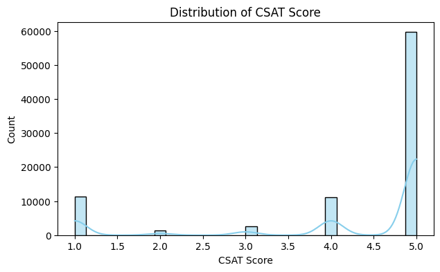

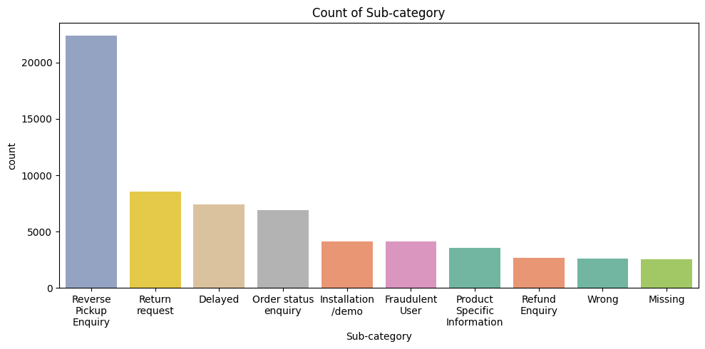
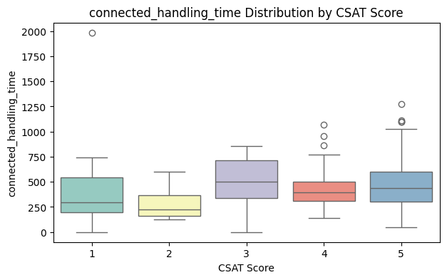
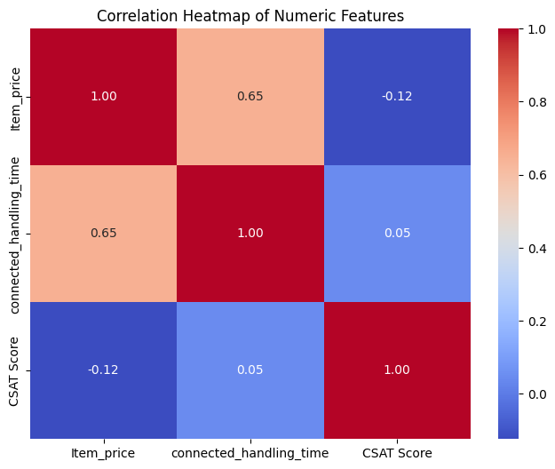
Completed EDA and identified key features and patterns influencing customer satisfaction. These insights will drive feature engineering and model selection in Week 4.
- Large dataset rendering caused longer plotting times and memory load in the notebook.
- Some features showed overlapping effects, complicating interpretation of correlations.
- Needed to refine visualization styles to improve readability for reporting.
- Improved visualization skills with Matplotlib & Seaborn for publication-quality figures.
- Learned to extract and document actionable insights from visual patterns.
- Recognized the role of EDA in shaping feature engineering and model strategy.
Proceed to feature engineering and selection, apply encoding and normalization where needed, split the dataset, and begin baseline model experiments.
Week 4 - Feature Engineering & Baseline Modeling
During Week 4, I focused on feature engineering, data preprocessing, and building baseline models. The main goal was to prepare the dataset for machine learning algorithms by transforming, encoding, and normalizing features, then train initial models to evaluate performance.
-
Feature Encoding: Applied one-hot encoding to categorical variables such as customer type, product category, and region.
-
Normalization & Scaling: Normalized numerical features like delivery time, product ratings, and purchase frequency using Min-Max scaling to improve model convergence.
-
Feature Creation: Engineered new features such as order_delay, average_rating_per_customer, and total_purchases_per_category to enhance predictive power.
-
Feature Selection: Used correlation analysis and variance threshold to remove irrelevant or highly correlated features to reduce redundancy.
-
Train-Test Split: Divided the dataset into training and testing sets (80%-20%) to evaluate model performance.
-
Baseline Model Training: Built baseline models including Logistic Regression, Decision Tree, and Random Forest to obtain initial performance metrics.
-
Model Evaluation: Calculated accuracy, precision, recall, and F1-score to compare baseline models and identify promising algorithms.
-
Documentation: Updated Week 4 notebook on GitHub, including all preprocessing steps, feature transformations, and initial model results.
Completed feature engineering and established baseline models. The dataset is now ready for further tuning and advanced modeling in Week 5.
Two key correlation heatmaps were produced during feature engineering and baseline modeling. These visualizations highlight relationships between numerical and engineered features; the full set of graphs is available in the Week 4 project notebook on GitHub repository.
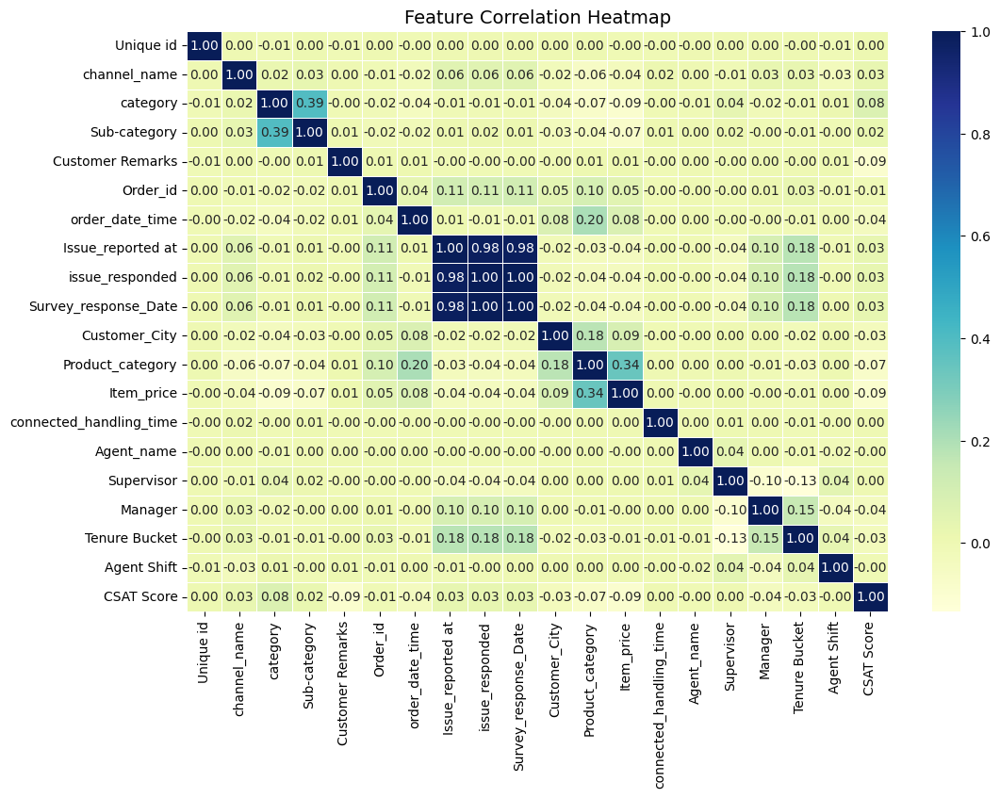
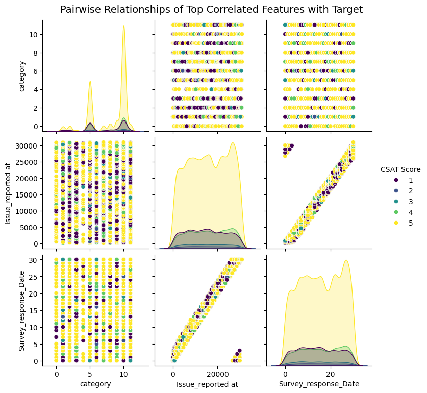
- Handling high-cardinality categorical features increased memory usage and model training time.
- Some engineered features showed minimal impact on model performance, requiring multiple iterations of selection.
- Maintaining reproducibility while experimenting with multiple preprocessing pipelines.
- Learned effective techniques for feature encoding, scaling, and engineering to improve model performance.
- Understood the importance of evaluating features before including them in the model to avoid overfitting.
- Gained hands-on experience in training and comparing multiple baseline models efficiently.
Perform hyperparameter tuning on selected models, experiment with ensemble methods such as Gradient Boosting and XGBoost, analyze feature importance, and refine the feature set further. Prepare detailed visualizations of model metrics and predictions for reporting.
Week 5: Machine Learning Algorithms
Week 5 focused on implementing multiple machine learning algorithms to predict customer satisfaction using the engineered dataset. The main objective was to compare different supervised learning models, analyze their performance, and understand which algorithm best fits the data distribution. Both classification accuracy and interpretability were key considerations.
- Data Splitting: Divided the dataset into 80% training and 20% testing sets to evaluate model generalization.
- Algorithm Implementation: Trained multiple machine learning models including Logistic Regression, Decision Tree, Random Forest, and K-Nearest Neighbors (KNN).
- Feature Scaling: Applied normalization and standardization techniques to ensure consistent feature distribution across models.
- Model Evaluation: Assessed each model using confusion matrix, accuracy score, precision, recall, and F1-score metrics.
- Feature Correlation Analysis: Used heatmaps and pairplots to visualize relationships among important features before model training.
- Algorithm Comparison: Compared all models based on performance metrics and selected Random Forest as the most reliable algorithm for further tuning.
- Documentation: Uploaded the Week 5 notebook with algorithm implementation results, evaluation tables, and graphs to GitHub.
Successfully trained and compared multiple machine learning algorithms on the processed dataset. Random Forest achieved the highest accuracy with balanced recall and precision, marking an important step toward model optimization in Week 6.
Two correlation graphs were generated this week to visualize relationships between key features and the target variable. These visuals helped in selecting features with strong predictive power before training machine learning models, GitHub.
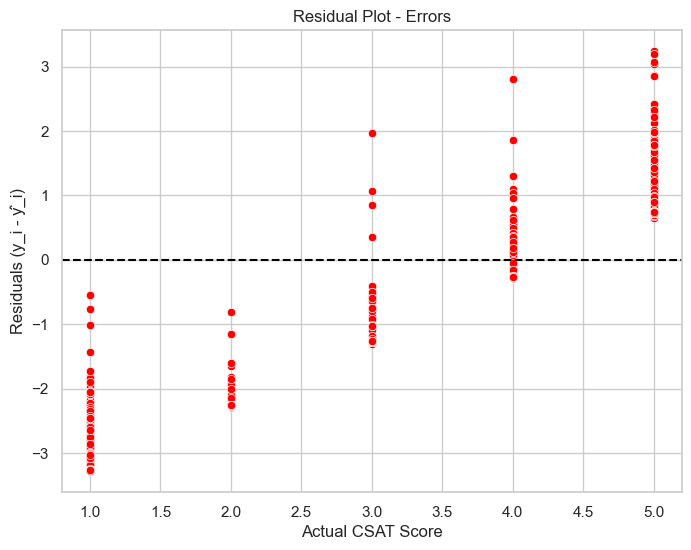
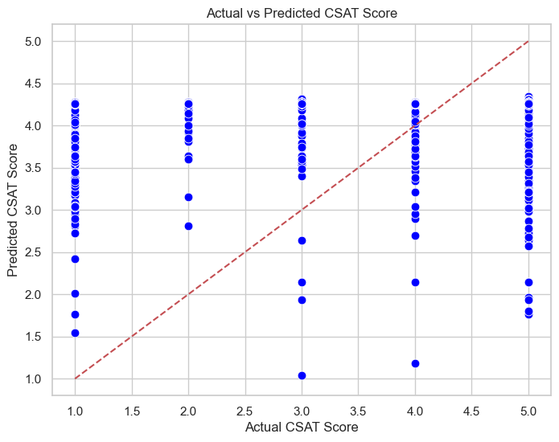
- Difficulty handling imbalanced classes during evaluation.
- Model training time increased for ensemble methods like Random Forest.
- Some algorithms required additional preprocessing steps, especially KNN and Logistic Regression.
- Learned the workflow of supervised learning from data preparation to model evaluation.
- Understood the trade-off between model complexity and interpretability.
- Recognized how correlation and feature selection affect model accuracy.
Proceed with hyperparameter tuning and cross-validation to optimize the best-performing model. Evaluate additional ensemble methods and validate results on unseen data for final deployment readiness.
Week 6: Unsupervised Learning & Clustering
During Week 6, I focused on supervised classification methods. The objective was to implement baseline classifiers, handle preprocessing for classification tasks, and compare initial model performances to select a baseline model for tuning.
- Train basic classifiers: Implemented Logistic Regression, Decision Tree, and Random Forest as baseline models.
- Preprocessing: Handled target encoding, scaled numeric features, and applied class-weighting/resampling when needed for imbalanced data.
- Train/Test Split: Used an 80/20 (stratified if needed) split for evaluation.
- Model Training: Trained models using default and simple tuned parameters to compare baseline performance.
- Initial Evaluation: Generated accuracy, precision, recall, F1-score and confusion matrices for each classifier.
- Comparison & Selection: Compared results and selected the best-performing baseline classifier for Week 7.
- Documentation: Uploaded Week 6 notebook, models, and visual outputs to the GitHub repository.
Baseline classification models implemented and evaluated. Chosen baseline model (e.g., Random Forest) set for detailed evaluation and tuning in Week 7.
Confusion matrices for key models and a comparison plot/table of accuracy, precision, recall, and F1 scores. Full visuals available in the Week 6 notebook on GitHub repository.

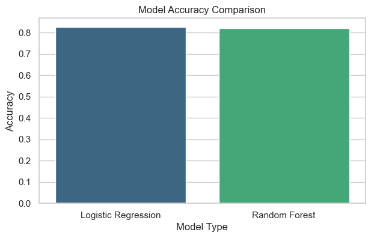
- Imbalanced classes impacted minority-class recall.
- High-cardinality categorical variables increased dimensionality after encoding.
- Longer training time for ensemble models on larger datasets.
- Prepared classification pipelines and handled class imbalance methods.
- Balanced interpretability and performance when choosing classifiers.
- Documented reproducible steps for model building and evaluation.
Conduct detailed model evaluation (confusion matrix, ROC/AUC, precision-recall), select the primary evaluation metric, and start hyperparameter tuning and resampling strategies.
Week 7 – Deep Learning Introduction
During Week 7, the focus was on evaluating the performance of the baseline classification model developed in Week 6. The goal was to understand which metrics are most suitable for the project and to analyze model strengths and weaknesses.
-
Evaluation Metrics: Implemented multiple model evaluation metrics including Precision, Recall, F1-Score, and Accuracy to analyze model performance.
-
Visualization: Generated a Confusion Matrix and ROC Curve to visualize classification effectiveness.
-
Model Comparison: Compared Logistic Regression, Decision Tree, and Random Forest based on metric outcomes.
-
Class Imbalance: Investigated class imbalance impact and applied weighted metrics for fair evaluation.
-
Insights: Interpreted model results to decide the most suitable final evaluation metric for ongoing improvements.
Evaluated baseline model performance, decided primary evaluation metrics, and identified the top features influencing model predictions.
Two key visualizations are shown below: accuracy comparison and top 10 feature importance from Random Forest. Full visuals available in the Week 7 notebook on GitHub.
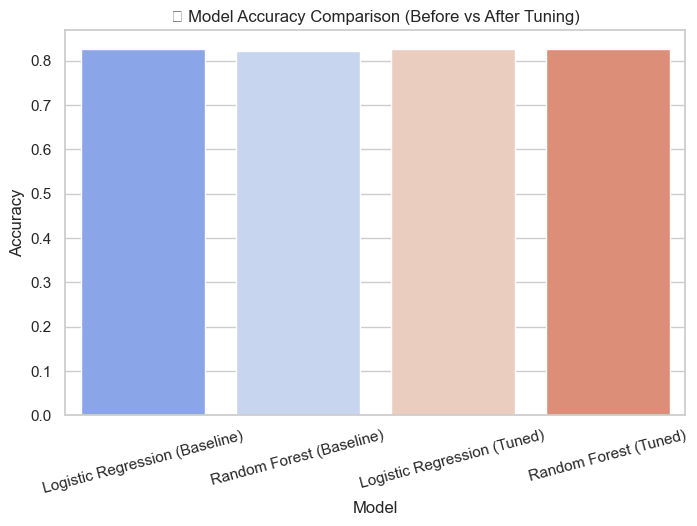

- Precision–Recall trade-off balancing was challenging for imbalanced datasets.
- Interpreting ROC–AUC results required parameter tuning for clarity.
- Needed additional visualization customization for better interpretability.
- Gained strong understanding of evaluation metrics beyond accuracy.
- Learned to interpret confusion matrices and ROC curves effectively.
- Understood how to select appropriate metrics depending on project goals.
Apply Unsupervised Learning techniques (K-Means, PCA) to explore hidden structures within the dataset and extract additional insights for feature enrichment.
Week 8 – Unsupervised Learning & Clustering
In Week 8, the focus was on **unsupervised learning techniques** to discover hidden patterns in the dataset. Key activities included applying clustering algorithms and Principal Component Analysis (PCA) for segmentation and visualization of data without using target labels.
-
Feature Scaling & Normalization: Standardized numeric features to ensure distance-based clustering methods like K-Means perform effectively.
-
Dimensionality Reduction (PCA): Applied PCA to reduce dimensionality and visualize clusters in 2D/3D space for better interpretation.
-
Clustering: Implemented K-Means and Hierarchical Clustering to segment the dataset and identify patterns.
-
Cluster Evaluation: Used Elbow Method and Silhouette Score to determine the optimal number of clusters and validate cluster quality.
-
Cluster Profiling: Analyzed cluster characteristics such as mean satisfaction, purchase frequency, and service rating to interpret business insights.
-
Documentation: Saved the Week 8 notebook, cluster plots, and PCA visualizations to the GitHub repository for review and version control.
Completed unsupervised analysis and identified meaningful clusters, which can now be used as additional features in supervised modeling for improved predictions.
Two key visualizations are shown below: PCA scatter plot and cluster distribution. Full results are available in the Week 8 notebook on GitHub repository.

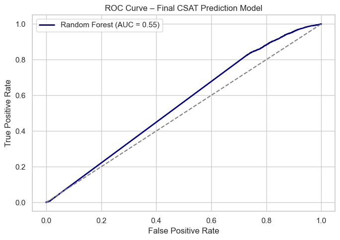
- Scaling and PCA reduced dimensionality but interpreting principal components for business meaning was non‑trivial.
- Choosing the right number of clusters required balancing statistical metrics (Silhouette, Elbow) with domain interpretability.
- Visualizing high‑dimensional clusters in 2D/3D often lost nuance of original feature space.
- Unsupervised methods can reveal structure in data that supervised models may not capture.
- PCA is effective for visualization and preprocessing but requires cautious interpretation when reused for modeling.
- Clusters become powerful features when their business relevance is meaningful and validated.
In Week-9, the plan is to apply Neural Network (ANN) techniques based on the enriched dataset (including cluster‑derived features), compare performance with earlier models, and evaluate suitability of deep learning for your project.